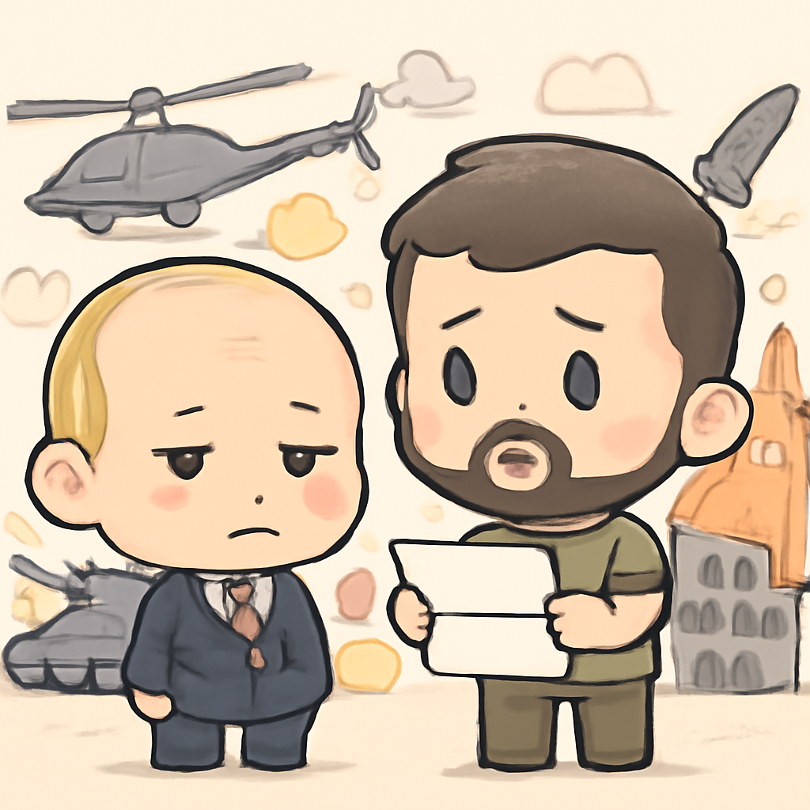
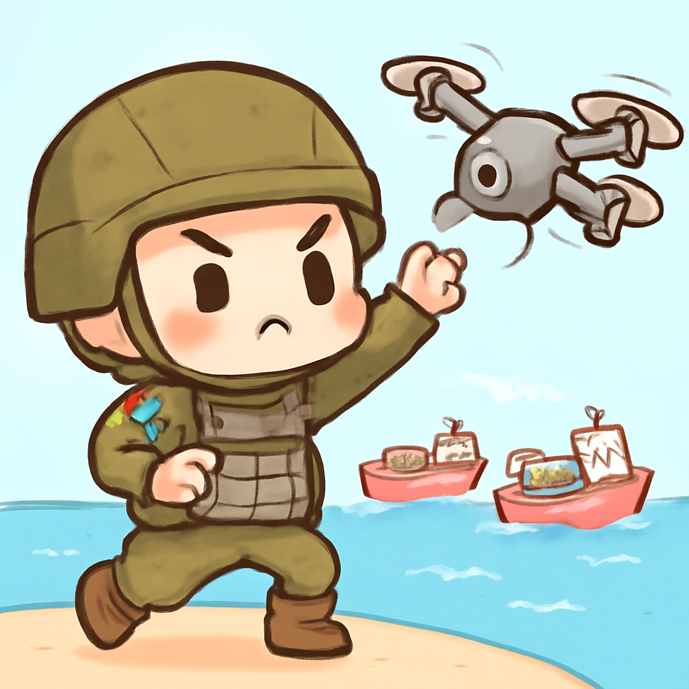
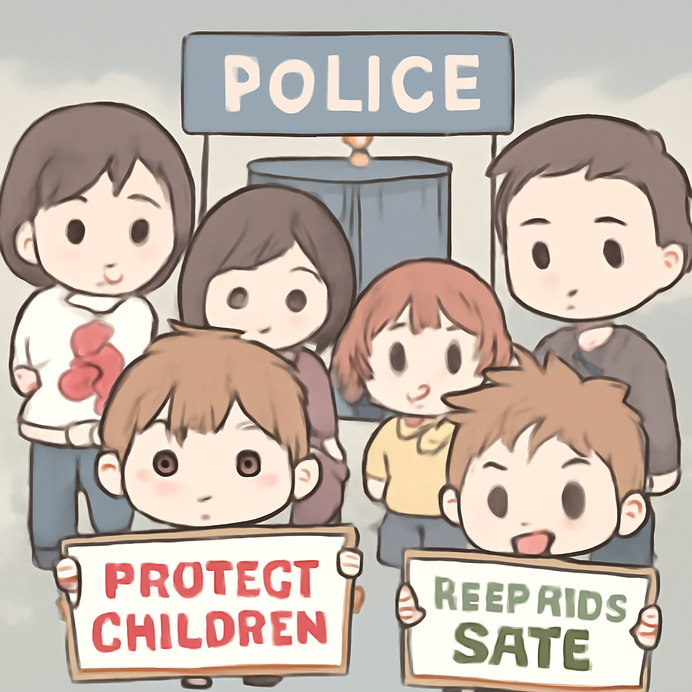
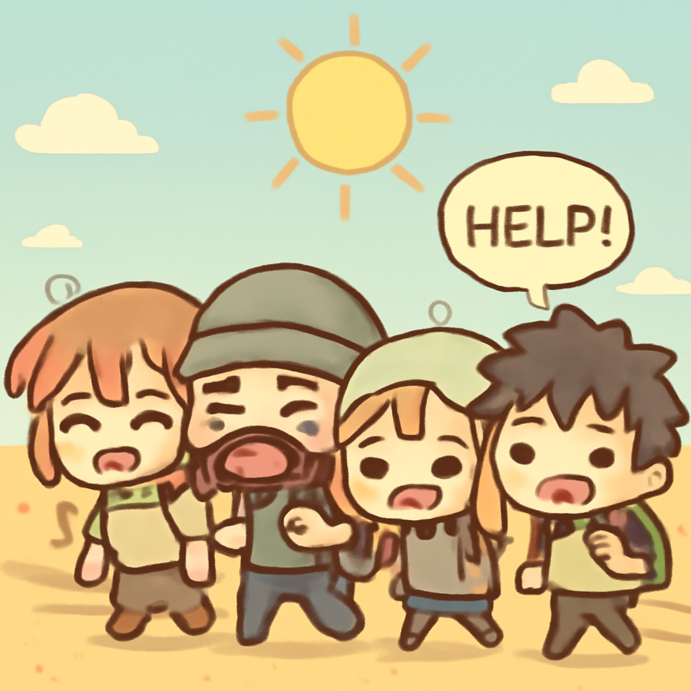
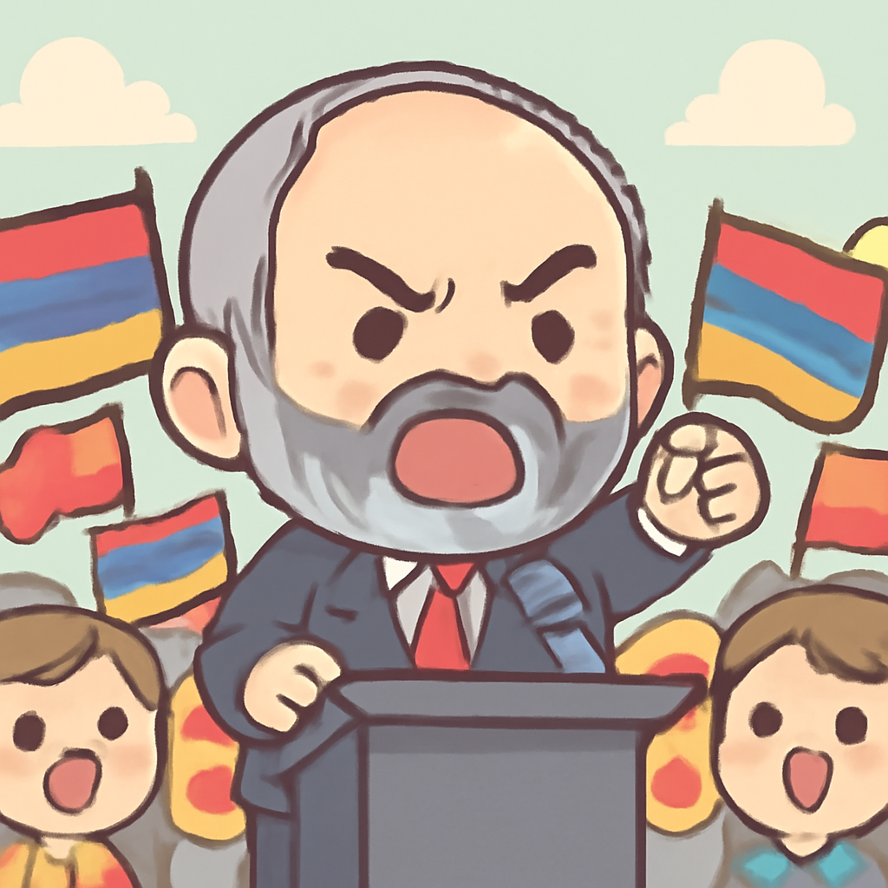

其一 · 俄羅斯 · 普京拒絕與澤連斯基會面
普京表示與烏克蘭總統無意會面

在俄羅斯，普京對烏克蘭總統澤連斯基提出的會面請求表示拒絕，認為這沒有意義。此舉再次顯示兩國的緊張關係，烏克蘭戰爭的結束似乎仍遙遙無期。普京的態度讓人想問：這個會面能不能用即時通訊搞定？
🔗 原始新聞 ↗
2026-06-06 · 以古觀今，以笑抗愁
普京表示與烏克蘭總統無意會面

在俄羅斯，普京對烏克蘭總統澤連斯基提出的會面請求表示拒絕，認為這沒有意義。此舉再次顯示兩國的緊張關係，烏克蘭戰爭的結束似乎仍遙遙無期。普京的態度讓人想問：這個會面能不能用即時通訊搞定？
🔗 原始新聞 ↗
烏克蘭在亞速海攻擊五艘運輸船

在烏克蘭，政府宣布已經成功攻擊了五艘運輸非法貨物的船隻，並承認在俄佔區進行無人機爆炸。這一行動表明烏克蘭在戰爭中的攻勢依然強勁，對俄羅斯的威脅不容小覷。就像貓咪一樣，當他們發現了老鼠，總是會使出全力！
🔗 原始新聞 ↗
法國社會對兒童謀殺案感到震驚

在法國，一名遭疑為殺害11歲女孩的嫌疑犯，竟然有過潛在性侵犯的犯罪記錄，這讓社會感到憤怒。這起案件不僅揭示了法律漏洞，也引發了對兒童保護的深刻反思。希望這能成為政策改進的催化劑，而不是僅僅成為一個悲傷的故事。
🔗 原始新聞 ↗
沙漠中近50人不幸因缺水而亡

在達荷美沙漠，一輛卡車故障導致近50名乘客在極端炎熱中缺水而死，只有兩人艱難求救。這個悲劇突顯了沙漠地區的生命脆弱，也提醒我們在旅途中務必保持水分。這次事件就像是大自然對不當行為的嚴厲警告。
🔗 原始新聞 ↗
阿美尼亞總理在選舉中尋求連任

在阿美尼亞，總理尼科爾·帕希尼揚面臨再度選舉，背景是國內外壓力和戰爭的困擾。這次選舉將考驗他對國家未來的願景，以及他能否在動盪中繼續執政。對於選民來說，這可不是一場普通的選舉，未來的路將會更加艱辛。
🔗 原始新聞 ↗